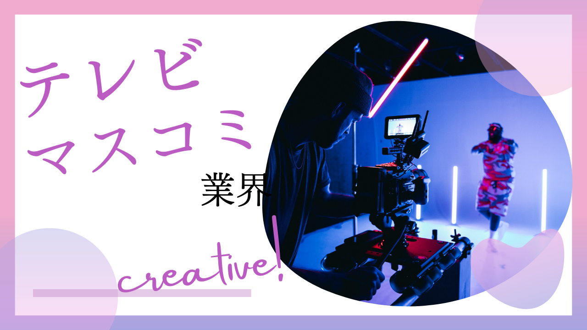

毎日放送の選考体験記


エントリーシート
| 提出期日/提出方法 | 1月中旬/マイページ |
|---|---|
| 結果通知時期/通知方法 | 2週間以内/マイページ |
質問１
あなたがこれまでの人生で取り組んできたことを、大きなことから小さなことまで10個絞り出して答えてください。(250)
質問２
あなたがあげた人生の取り組みの中から1つ選び、具体的に教えてください。(100)
質問３
あなたが好きなものを絞り出して、できる限り列挙してください。(150)
質問４
あなたがあげた好きなものの中から一つ選び、その魅力を教えてください。(100)
質問５
あなたの性格を良いところも悪いところも含めて100%アピールしてください。(100)
質問６
ご自身の座右の銘とそれを選んだ理由を教えてください。(100)
質問７
5年後、毎日放送の中で、あなたはどのように貢献していますか？(150)
質問８
あなたの超常識な、エピソードや経験を教えてください。(200)
質問９
現在、内定ずみ、最終選考中の企業がありましたら教えてください。
質問１０
一番目に興味のある仕事で具体的に挑戦したいこと(35)
質問１１
二番目に興味のある仕事で具体的に挑戦したいこと(35)
質問１２
三番目に興味のある仕事で具体的に挑戦したいこと(35)
注意した点
自分だけのエピソード、自分だから語れる内容を多く組み入れた。(自分の好きなものとかは特に個性を出した)
1次面接
| 面接時期 | 1月末(2日間で一気に開催される) |
|---|---|
| 面接時間 | 10分 |
|
面接官の人数・ 役職/学生の人数 |
一般職の若手社員2名(おそらく人によって異なる) / 1 |
| 結果通知時期/方法 | 面接最終日翌日 / マイページ |
質問内容
・自己紹介
・志望動機
・どんな番組を作りたいか
・最後に一言
・志望動機
・どんな番組を作りたいか
・最後に一言
注意した点・感想
超雑談チックな面談。面接ではなく面談という名の通り、明るい雰囲気。10分という限られた時間なので、端的かつ絶対伝えたいことを組み込むこと。あとは元気よく！笑顔で！！
PDF課題提出
形式
A4一枚。
「自己PR＋MBSで実現したいこと」を自由に表現。
「自己PR＋MBSで実現したいこと」を自由に表現。
締め切り
2月初旬(1次面接合否発表の3日後)
(＊私の場合は、ES提出後から半月の猶予があるので、あらかじめ仕上げていた)
(＊私の場合は、ES提出後から半月の猶予があるので、あらかじめ仕上げていた)
対策方法
見やすい＋なるべく具体的にかく。
会社で働く姿を想像できているんだな、と思わせられるように！
会社で働く姿を想像できているんだな、と思わせられるように！
2次面接
| 面接時期 | 2月初旬(2日間で一気に開催される) |
|---|---|
| 面接時間 | 10~12分 |
|
面接官の人数・ 役職/学生の人数 |
一般職の中堅社員3名(私の場合はスポーツ局の社員) / 1 |
| 結果通知時期/方法 | 面接最終日翌日 / マイページ |
質問内容
・モチベーションの原点
・ガクチカの苦労した点について
・やっててよかったなって思うこと
・出会えてよかった人
・その人から言われて嬉しかった言葉
・志望動機
・なぜ医学の道からテレビ？
・好きなものの理由
・最後に一言
・ガクチカの苦労した点について
・やっててよかったなって思うこと
・出会えてよかった人
・その人から言われて嬉しかった言葉
・志望動機
・なぜ医学の道からテレビ？
・好きなものの理由
・最後に一言
注意した点・感想
雑談ベースの雰囲気で、パーソナリティを深ぼられていく。この人がどういう人なのか、を純粋に知りたいのだと思う。考え方・価値観・MBSで何がしたいのか、を明確にアピールすることが大事だと思う。
webテスト
形式
webテスト(形式は不明。玉手箱に似ている)
ここで落とされることはない。
次回面談までに
・webテストの受験が必須
次回選考時、さらに
・自己紹介書の提出が求められる
ここで落とされることはない。
次回面談までに
・webテストの受験が必須
次回選考時、さらに
・自己紹介書の提出が求められる
内容
・算数的な問題30分
・語彙問題10分
・適性検査30分
・アンケート
・語彙問題10分
・適性検査30分
・アンケート
対策方法
一般的なwebテ対策をしていれば大丈夫。
筆記テスト(人事面接と同日に行われる)
形式
時事問題＋作文＋クリエイティブテストみたいなもの
内容
・時事問題
漢字や語句の意味、著名人の名前や代表作などを答えるもの。難易度が高く、就活生同士でそこまで差は出ないと思われる。採用側としても、最低限のラインを超えているかの評価として用いている印象。
・作文(テーマは年によって変わり、その場で発表される)
50分で原稿用紙3枚にまとめる。時間的余裕はだいぶある。
・クリエイティブテスト？
10問ほどの穴埋め問題。ただし、問題というよりは、自分なりの回答を制限時間内に埋め、文章を完成させる形式。時間がないので、考えている暇はない。その場で思ったことを書き、文を完成させる。
漢字や語句の意味、著名人の名前や代表作などを答えるもの。難易度が高く、就活生同士でそこまで差は出ないと思われる。採用側としても、最低限のラインを超えているかの評価として用いている印象。
・作文(テーマは年によって変わり、その場で発表される)
50分で原稿用紙3枚にまとめる。時間的余裕はだいぶある。
・クリエイティブテスト？
10問ほどの穴埋め問題。ただし、問題というよりは、自分なりの回答を制限時間内に埋め、文章を完成させる形式。時間がないので、考えている暇はない。その場で思ったことを書き、文を完成させる。
対策方法
不安な人は時事問題集＋ニュースを見ておく。
作文：大事な思い出や頑張ってきたこと、今までの人生を振り返っておけば、どんなテーマでも書きやすいのではないか。
ただ、筆記テストよりも圧倒的に面接対策をしておくべきだと思う。
作文：大事な思い出や頑張ってきたこと、今までの人生を振り返っておけば、どんなテーマでも書きやすいのではないか。
ただ、筆記テストよりも圧倒的に面接対策をしておくべきだと思う。
3次面接(人事面談)
| 面接時期 | 2月中旬(筆記テストと同日) |
|---|---|
| 面接時間 | 15-20分 |
|
面接官の人数・ 役職/学生の人数 |
人事部社員3名(人事部部長・課長レベルの方々) / 1 |
| 結果通知時期/方法 | 面接最終日翌日 / マイページ |
質問内容
・アイスブレイク的な質問(今日どこからきたの？)
・ガクチカの深掘り
・なぜそこまで頑張れたのか
・志望動機
・なぜ医学の道からテレビ？
・タフな仕事だけど大丈夫？
・記者に向いてそうだけど、目指さなかったのか
・好きなものの理由
・最後に一言
・ガクチカの深掘り
・なぜそこまで頑張れたのか
・志望動機
・なぜ医学の道からテレビ？
・タフな仕事だけど大丈夫？
・記者に向いてそうだけど、目指さなかったのか
・好きなものの理由
・最後に一言
注意した点・感想
基本は雑談ベース。ただ、本当にMBSに来る気はあるのか、というところを徹底的に深ぼられる。
私の場合、面接の半分以上の時間を志望動機に関する質問に当てられていたと思う。本当にMBS出ないといけない理由を明確に伝えることが大事。
私の場合、面接の半分以上の時間を志望動機に関する質問に当てられていたと思う。本当にMBS出ないといけない理由を明確に伝えることが大事。
対策イベント！
最終面接(役員面談)
| 面接時期 | 3月初旬 |
|---|---|
| 面接時間 | 10分 |
|
面接官の人数・役職 /学生の人数 |
役員3名(社長+役員2名) / 1 |
| 結果通知時期/方法 | 翌日 / マイページ+電話 |
内容（テーマ・プレゼン時間など）
・志望動機
・医学の道にはなぜ進まないのか
・どういった立ち回りで活躍していくか
・マスメディアの中でもなぜテレビ・MBSか
・最後に一言
・医学の道にはなぜ進まないのか
・どういった立ち回りで活躍していくか
・マスメディアの中でもなぜテレビ・MBSか
・最後に一言
注意した点・感想
10分の中で見られているのは回答の質よりも、雰囲気や意思の強さだと感じた。明るくハキハキと話すこと。本当にMBSである必要性をしっかり伝え切ること。
インターン
| 開催時期/実施日数 | 9月初旬/3days |
|---|
内容
・社員(アナウンサー・ディレクター・スポーツ取材など)のお話
・番組ができるまで
・企画書について
・インターン内課題に関する説明
・オンライン社内見学
・課題発表会
自己紹介VTR(30s-1分程度)作成・発表
テーマに関するVTR(3分)作成・発表
・番組ができるまで
・企画書について
・インターン内課題に関する説明
・オンライン社内見学
・課題発表会
自己紹介VTR(30s-1分程度)作成・発表
テーマに関するVTR(3分)作成・発表
注意した点・感想
動画制作能力は重要視されていない。
いかに見る人の立場で物事を考え、自分なりの面白さを伝えられるか、が大事だと感じた。
いかに見る人の立場で物事を考え、自分なりの面白さを伝えられるか、が大事だと感じた。
選考への影響
本選考でのES通過。
内定
| 内定時期 | 3月中旬 |
|---|---|
| 承諾検討期間 | なし(電話にて意思確認) |
| 承諾or辞退 | 承諾 |
承諾or辞退理由
・とにかく人が良い
・会社を変えたい、という想いもあった
・最も関わりのあった会社だったから
・会社を変えたい、という想いもあった
・最も関わりのあった会社だったから
内定者属性（大学とか文理とか）
東大、早慶・MARCH、東北大など16人
選考全体の感想
内定先に興味を持ったきっかけ
テレビ業界を目指したことがきっかけ。インターン＋MBS主催のアイデアコンテストに参加できたことも大きい
どういった基準でこの企業を選んだか
・とにかく人が良い
・尊敬できる人が何人もいる・その人の魅力を語れる点で他の企業とは同等に比較できなかった。
・会社を変えたい、という想いもあった
・最も関わりのあった会社
・尊敬できる人が何人もいる・その人の魅力を語れる点で他の企業とは同等に比較できなかった。
・会社を変えたい、という想いもあった
・最も関わりのあった会社
選考を通して重要視されたと感じた点
自分に素直なこと。自分だけの想いを大事にしている点を重視していると感じた。
同業他社と比べてこの企業の魅力は？
・関西にも全国にも番組展開できる
・ジョブローテーションがある
・人柄と会社のスタンス
→どの就活生に対してもフラットで、ひいきがない。
・ジョブローテーションがある
・人柄と会社のスタンス
→どの就活生に対してもフラットで、ひいきがない。
この企業を受けるにあたって工夫した点
絶対に嘘をつかない。ES一つ一つに自分の想いを組み込む。
〜〜だからこれが好き、など。
〜〜だからこれが好き、など。
社員（と内定者）にどのような印象を持ったか
社員
真剣に自分のキャリアについて考えてくれる。強要はしない、だけど次のアクションが明確になるように全力でサポートしてくれる。
社会人だけど社会人っぽくない。確固たる自分を持ってる。
内定者
個性が強い。けど思いやりのある人が多い。
真剣に自分のキャリアについて考えてくれる。強要はしない、だけど次のアクションが明確になるように全力でサポートしてくれる。
社会人だけど社会人っぽくない。確固たる自分を持ってる。
内定者
個性が強い。けど思いやりのある人が多い。
後輩へのアドバイス
頑張りすぎないこと、が大事だと思います！
何度も書くけど、自分に嘘をつかないってことが大事なんだと実感しました。頑張ることは大事だけど、果たして今やっていることは、自分らしい頑張り方なのか、を考えてみて欲しいです！
その上で、MBS目指したいって思ってくれる人がいたら、全力でサポートしたいと思ってます！
何度も書くけど、自分に嘘をつかないってことが大事なんだと実感しました。頑張ることは大事だけど、果たして今やっていることは、自分らしい頑張り方なのか、を考えてみて欲しいです！
その上で、MBS目指したいって思ってくれる人がいたら、全力でサポートしたいと思ってます！